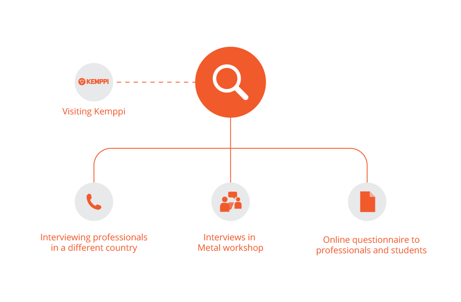
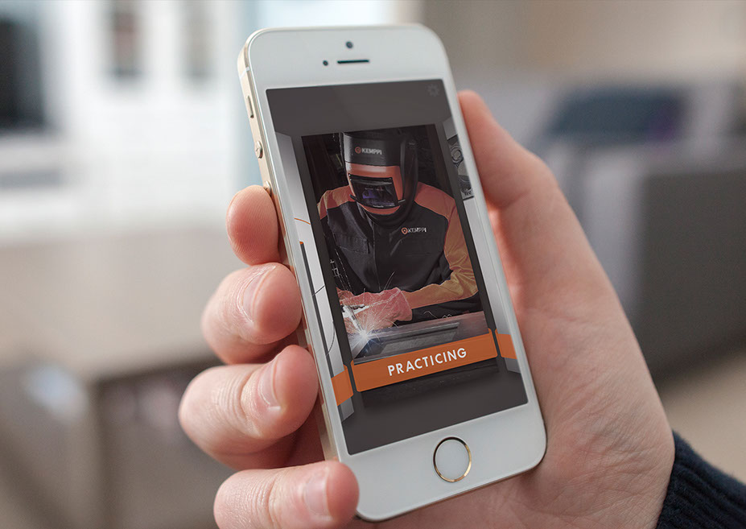
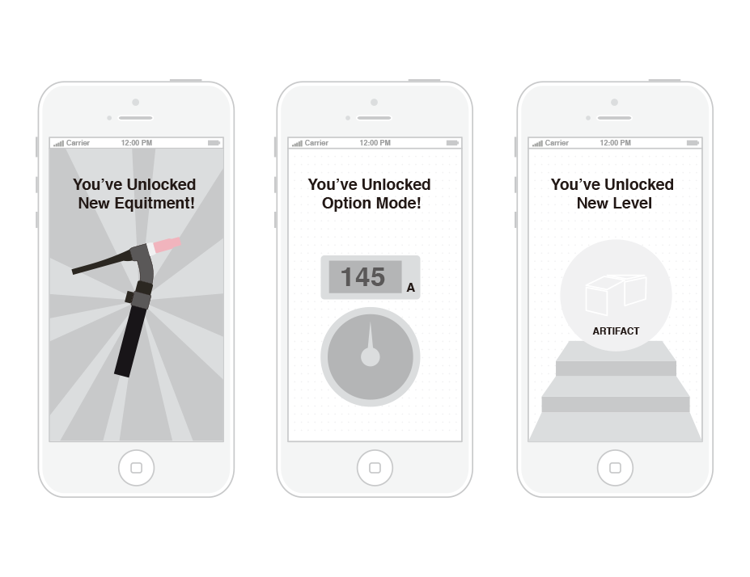
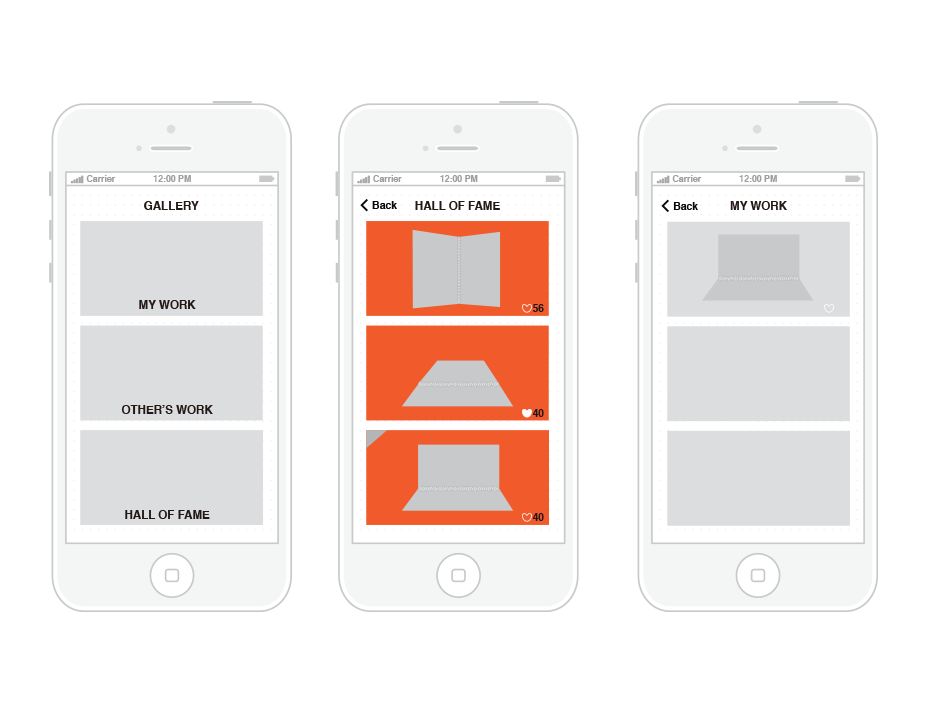
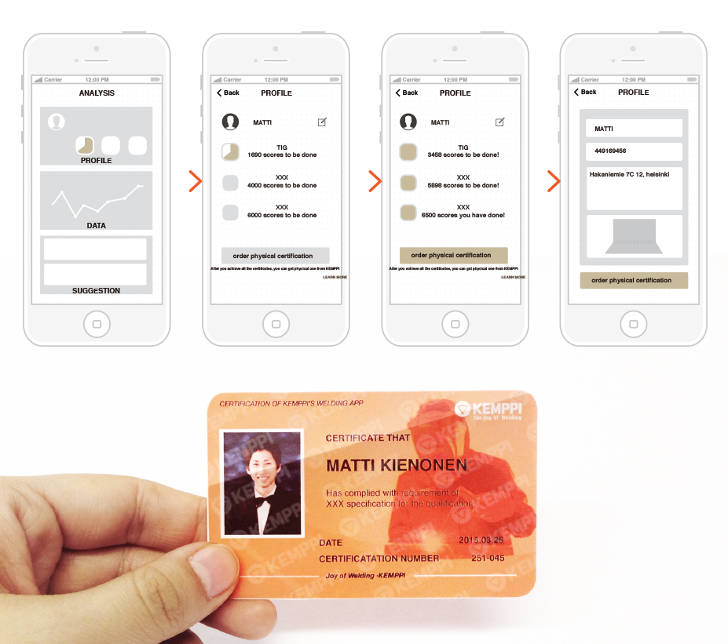

Delivering the Feeling of Reality
Welding training application concept
Designers: Jaeyong Lee, Nan Yang
My Roles in the team: Design research,Visual design, UI/UX design
Client: Kemppi
Kemppi was looking for a new idea for creating virtual welding training tool that does not require high-priced welding devices for practices. As the company desired, our team created new concept ideas: mobile application for welding training, and an exhibition event, that could deliver pleasant and proud experience for novice welders as well as expanding the business opportunities of Kemppi as a part of creative marketing strategies.
Background
In welding industry, the need for virtual training tools is getting more important: delivering realistic experiences without consuming materials. At the same time, the skills and knowledge of welding cannot be easily acquired because the profession requires advanced manual skills in numerous tasks with countless variations depending on the materials, environment, and purpose. Based on this background, KEMPPI, a world-leading manufacturer of arc welding equipment and a provider of productive welding solutions, sought to develop a pleasant-to-use welding training application.
Design Research
To figure out how welders feel about welding and what are their experiences for welding, our team started to do researches with professional welders in Finland and South Korea, an artist who is using welding as a main method to make his own artifacts, novice welders, students who are interested in welding, students who just knew basic knowledge, and instructors who are currently teaching welding skills to beginners.
 Research methodsInsights
1) Feeling of reality
First, feeling of reality was one of the key factors what we needed to bring in our design. As the research results showed, without the feeling of reality, the virtual training tool cannot be convinced, and cannot deliver the experiences what we intended.
2) Encouragement (rewards)
Second, application should provide rewards to users. While doing researches, we realized that many novice welders who do not have enough skills and knowledge were worried about their performances in real works. The welders concerned about their skills that are insufficient to make good quality of works, and bad results that can be generated by their insufficient welding skills. Encouraging welders to make them focus on works and practices with self-motivation was necessary.
3) Attractiveness
Third, the Attractiveness of the design was crucial. Starting from interesting interactions to pleasurable system that can contribute users’ involvement, e.g., level system, rewards system, and community system, could encourage users to use application more and utilize it for the improvement of their profession.
4) Providing confidence & trust
Fourth, making novice welders believe themselves about skills, results, and work itself should be realized. Constant practicing with theoretical knowledge would help welders to have self-esteem that they can do whatever tasks are, as well as the proudness of works when it is accumulated.
User Experience Goals
Redefined user experience goals consist of three steps: pleasure as a momentary experience goal, self-motivation as an episodic experience goal and proudness as an accumulative experience goal.
Pleasurable experience would make welders use our anticipated application constantly, as well as would help to be interested in welding more, which means that they could practice more. When users use our application to practice constantly, we tried to make them have self-motivation that welders realize that they need to train for their overall competence, and doing practices and studies continuously. When the pleasure and self-motivation come to be accumulated, welders could have proudness about their skills, results and work as itself.
Design Concept
Our concept idea is a pleasurable and practical mobile application as a self-learning tool for welding training. Through this application, users can improve their practice skills: keeping stable movement and develop their internal interests in welding.
There are three main functions in our application: practicing, analyzing and gallery. In practice part, user can select different task and start practice, then there will be evaluation and initial analysis. Another one is analysis, in this part user can check their personalized data, i.e., how many scores and certificates they have achieved in this application, and they have the opportunity to order a physical certification. Gallery is the place for sharing work results to others, and works with many appreciations would be selected in Hall of Fame and featured to other users.
Design Outcome
 Virtual welding training with the feeling of reality1. Practicing with feeling of reality
As a learning tool, we try to provide the feeling of reality by using some elements in real welding so users can get similar experience with reality. In this app, after selecting task and preparation, once pressing the start button background turns to dark. Sparks moving in the screen with real hand movement, and there are also sounds and phone vibration during the “welding” process. When release the button, process just stop and background change to normal. Sensory experience is quit similar with welding in real world; interactive way of button is the same with operating real welding devices. All these factors are aim to provide feeling of reality.
We used the a technology that is already used in every mobile phone: panorama camera mode, which detect stability and speed by constantly taking pictures and analyzing the differences between the pictures. When users open the practice mode, the function is automatically activated behind of the screen, so users can practice welding by checking stability of their hand movements with virtual welding materials and visual effects.
2. Instant feedbacks with brief analysis
After delivering a working result, an instant feedback with a brief analysis of the result follows. Instant feedback is shown as a short animation, for example dropping the work piece from air to ground and to see what happened: if the work is sufficient, the metal piece will be stable; on the contrary it will be broken. There are different types of evaluation like dropping, squashing, cutting and so on. But each time only one type will be shown random, so give some surprise for users. These evaluation are essential in practical welding evaluation, but we use an exaggerated and funny way to express it. Then instant analysis comes, it evaluates the work result from different criteria and give the final scores. In the page user can choose to move on, try again or share this result to gallery in this application or social network.
3. Unlocking new features for internal rewards
After practicing many times and getting enough scores, new features including new equipment, option mode and new task level will be unlocked. After unlocking new equipment more choices of welding types are available; after unlocking option mode users can set the machine as preparation by themselves in which phase they can learn more theoretical knowledge; after unlocking new task level, users can try to weld an object or even creating artifact.
 Unlocking features4. Gallery: Share, Appreciate and get honor
Gallery is a place for sharing and communicating between user communities. One’s works have been shared to gallery are collected in My Work, where user can manage work history and check how many appreciations they get from other users as well. User can share their work to others here and browse others’ works as well. Giving ‘heart’ is a way to express appreciation to others’ awesome work. Those works with many hearts will be selected in Hall of Fame and be exhibited there.
 Gallery5. Certification from virtual to real world
Once users collect all the certificates in this application they can order a physical card as certification from Kemppi and their favorite work in this application can be selected as the backside of this card. Then this totally personalized card will be delivered to users’ home. We try to use this card to bring proudness from virtual application to real world.
 The workflow of acquiring a physical certificate6. Become an artist
We also created a more radical idea beyond a mobile app. It is about opening an exhibition event through giving special tasks to welders. Making own art pieces through our application and real materials, then exhibiting their works in a real space.
This series of events as a trigger to bring more attention to welder’s ability for value creation. Welders as craftsmen are creating values by their hands everyday but what can they do will not limited in welding two pieces metal together. For welders, this idea provide the opportunity of being an artist and creating artifact for them and during the process of participating this event and showing their talent to others they could have many positive feelings including proudness, self-esteem and enjoyment. On the other hand, the exhibition would be the opportunity to share stories, making new connection, giving motivation, feeling proudness, and possibly seek new job opportunities as well. In perspective of Kemppi, this exhibition could create business opportunities. They can meet future customers, and can invite business partner to show what they’re doing and their responsibility for the whole welding industry.